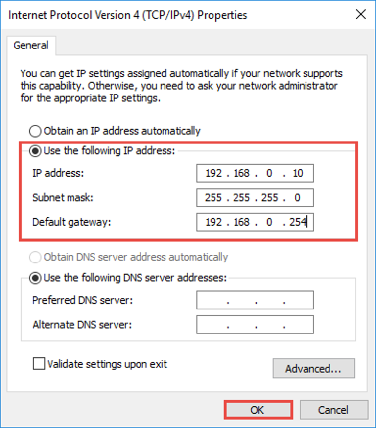

1.1 What is software?
Definition, hardware relationship, features, and examples.
1.2 Types of software
System, application, utility, and general software categories.
1.3 Network setup
Basic LAN setup and Microsoft Office installation.
1.3.1 IP address setup
IP addresses, DHCP, static addresses, IPv4 and IPv6.
1.3.2 Firewall
How a firewall controls network traffic.
1.3.3 Antivirus
How antivirus software protects computers from malware.
1.4 Internet
Internet access, business uses, and safe browsing.
1.5 E-mail
Uses, structure, and professional email communication.
No section matches that search.
1.1 What is Software?
Software is a collection of programs and data that gives instructions to computer hardware. Hardware is the physical part of a computer, such as the keyboard, monitor, processor, and memory. Hardware cannot decide what to do by itself; it needs software to control and coordinate its operations.
For example, in a word-processing program, software takes text entered by the keyboard, stores it in memory, processes it, and displays it on the monitor. The keyboard and monitor are hardware, while Microsoft Word or LibreOffice Writer is software.
Difference between hardware and software
| Hardware | Software |
|---|---|
| Physical and visible component of a computer. | A set of instructions and data that runs on hardware. |
| Can be touched and replaced. | Usually cannot be touched physically. |
| Examples: monitor, mouse, RAM, hard disk. | Examples: operating system, browser, calculator. |
| Designed and manufactured. | Developed, written, and updated by programmers. |
| Does not depend on software instructions. | Cannot operate without compatible hardware. |
Important features of software
- It provides instructions: Software tells the hardware what task to perform and in what order.
- It is non-physical: It exists as files, code, and data, although it is stored on a physical disk or memory.
- It can be developed and updated: A software program can receive improvements, bug fixes, and security updates.
- It can be copied or installed: The same software package can be installed on different compatible computers.
- It must be compatible: Software must support the computer's operating system and hardware architecture.
- It depends on hardware: Software runs correctly only when the required processor, memory, storage, and devices are available.
1.2 Types of Software
Software is commonly divided into system software, application software, and utility software. These categories describe the main purpose of the software.
1. System software
System software manages and controls computer hardware. It provides a platform on which application software can run. The most important example is the operating system (OS).
Examples include Windows, Linux, macOS, Android, and iOS. An operating system manages the processor, memory, files, input and output devices, connected hardware, and running applications.
System software does not normally perform a specific end-user task. It provides the environment needed for tasks such as document writing, web browsing, or video editing.
2. Application software
Application software is designed for a particular user task. It uses the services of the operating system but provides a direct benefit to the user.
| Application type | Examples | Purpose |
|---|---|---|
| Word processing | Microsoft Word, LibreOffice Writer | Create and edit documents. |
| Spreadsheet | Microsoft Excel, LibreOffice Calc | Perform calculations and analyze data. |
| Presentation | Microsoft PowerPoint, LibreOffice Impress | Create slides for presentations. |
| Database | MySQL, Microsoft Access | Store and manage structured data. |
| Web browser | Google Chrome, Mozilla Firefox | Open and interact with websites. |
| Graphic or video editor | Photoshop, Canva, Adobe Premiere | Edit images and videos. |
| Communication | Email clients, messaging applications | Exchange messages and information. |
3. Utility software
Utility software helps maintain, secure, and manage a computer system. It supports the operating system and performs specialized tasks.
- Antivirus software: detects and helps remove malware.
- Backup software: creates copies of important files.
- Disk cleanup tools: remove unnecessary temporary files.
- Compression tools: reduce file size or create archives.
- File-management tools: copy, move, rename, organize, and recover files.
Other useful classifications
Software can also be classified by its distribution model:
| Type | Meaning | Example |
|---|---|---|
| Freeware | Available to use free of cost, but the source code is not necessarily open. | Many freeware applications. |
| Open-source software | The source code is available and may be studied, changed, or redistributed under its licence. | LibreOffice, Linux, Firefox. |
| Commercial software | Sold or licensed by a company; use is governed by the licence. | Microsoft Office, Adobe Photoshop. |
| Shareware | Provided for trial or limited use before purchase. | Some paid trial programs. |
Installing Microsoft Office
- Check that the computer meets the supported operating system and system requirements.
- Sign in to the correct Microsoft account that owns or has a valid licence for Microsoft 365.
- Open the Microsoft account services page and select the option to install Microsoft 365 or Office.
- Download the official installer for the correct Windows version and architecture.
- Open the downloaded installer and allow it to run if Windows asks for permission.
- Wait for setup to download and install the Office applications.
- Open an application such as Word and activate it using the licensed account.
- Check the application under Account or About to confirm that activation is successful.
The exact button names may differ according to the Microsoft 365 or Office version, but the basic process remains the same: obtain the official installer, run it, sign in, and activate the licence.
1.3 Network Setup
A computer network is a group of computers and devices connected to communicate and share resources. Devices may share files, printers, an internet connection, or network services.
Basic types of networks
| Type | Full form | Normal coverage |
|---|---|---|
| LAN | Local Area Network | A room, office, home, or building. |
| MAN | Metropolitan Area Network | A city or a large campus. |
| WAN | Wide Area Network | A country or several locations connected over large distances. |
| PAN | Personal Area Network | Devices belonging to one person, such as a phone and Bluetooth headset. |
1.3.1 IP Address Setup
An IP address is a numerical address assigned to a device for communication on an IP network. It identifies the device on the network and helps route data to and from it.
IPv4 and IPv6
| Address type | Format | Example | Main feature |
|---|---|---|---|
| IPv4 | Four decimal numbers separated by dots. | 192.168.1.10 | 32-bit address; still widely used. |
| IPv6 | Eight hexadecimal groups separated by colons. | 2001:db8::1 | 128-bit address; a much larger address space. |
In the IPv4 example 192.168.1.10, the address and subnet mask together determine which devices are on the local network. A common subnet mask is 255.255.255.0.
IPv4 address classes
IPv4 addresses were originally grouped into classes according to their first octet. The classes are mainly studied for basic networking and historical understanding.
| Class | IP address range | Default network use |
|---|---|---|
| Class A | 0.0.0.0–127.255.255.255 | Large networks. |
| Class B | 128.0.0.0–191.255.255.255 | Medium-sized networks. |
| Class C | 192.0.0.0–223.255.255.255 | Small networks. |
| Class D | 224.0.0.0–239.255.255.255 | Multicast use. |
| Class E | 240.0.0.0–255.255.255.255 | Reserved for experimental and research use. |
Subnet mask
A subnet mask separates the network portion of an IPv4 address from the host portion. For example, with address 192.168.1.10 and mask 255.255.255.0, the local network address is 192.168.1.0, and addresses from 192.168.1.1 to 192.168.1.254 can be used as hosts.
Default gateway
The default gateway is the device, usually a router, through which a local network sends traffic that is outside the local network. A typical gateway may be 192.168.1.1.
Dynamic IP address
A dynamic IP address is assigned automatically. The network router or server uses DHCP (Dynamic Host Configuration Protocol) to provide an available address for a certain lease period.
DHCP generally supplies at least the IPv4 address, subnet mask, default gateway, and DNS server information. Dynamic addressing is usually best for ordinary computers, laptops, phones, and printers.
Static IP address
A static IP address is entered manually and does not change unless it is changed manually or through network management. Static addresses may be used for servers, printers, network cameras, or devices that require predictable addressing.
A static address must be outside the router's DHCP automatic address range. Otherwise, the same address could later be assigned to another device and cause an address conflict.
Configure a static IP in Windows
- Open Settings.
- Select Network & internet.
- Choose Wi-Fi for a wireless connection or Ethernet for a wired connection.
- Open the active network connection and find the IP assignment section.
- Select Edit or Manage and change IPv4 settings from Automatic/DHCP to Manual.
- Turn on IPv4, enter the static IP address, subnet prefix length, and gateway.
- Enter the preferred and alternate DNS addresses if required.
- Select Save.
- Open Command Prompt and run
ipconfigto verify the address.

Verify and test the setup
In Windows, open Command Prompt and use the following commands:
ipconfig
ping 192.168.1.1ipconfig displays the IPv4 address, subnet mask, and gateway. ping tests whether a computer can communicate with the gateway or another host. If the gateway responds but a website name does not, check the DNS settings.
1.3.2 Firewall
A firewall is a security system that monitors and controls network traffic entering or leaving a computer or network. It uses security rules to allow safe connections and block unauthorized or suspicious connections.
A firewall can be built into an operating system, installed as security software, or provided by a network device such as a router. It helps protect computers from unauthorized access, but it does not replace antivirus software or safe user practices.
Why a firewall is important
- Blocks unauthorized access to computers and company networks.
- Controls which applications can connect to the internet.
- Reduces the risk of attacks from suspicious network traffic.
- Helps businesses protect files, customer information, and online services.
1.3.3 Antivirus
Antivirus software is a security program designed to detect, block, and remove malicious software, also called malware. Malware includes viruses, worms, ransomware, spyware, and other programs that can damage files, interrupt work, or steal information.
Antivirus software checks files, applications, downloads, email attachments, and websites for known or suspicious threats. It may quarantine or remove an infected file and alert the user when action is needed.
Examples of antivirus software
- Windows Defender
- Bitdefender
- Kaspersky
Why businesses care about antivirus protection
One malware infection can cause financial loss, system downtime, loss of customer trust, and legal problems. Businesses should keep antivirus software updated, scan files from unknown sources, and avoid opening suspicious links or attachments.
1.4 Internet
The internet is a global network of interconnected computers and devices that communicate using agreed rules called protocols. It connects people, organizations, applications, and devices around the world.
The internet is made up of many connected networks rather than one single computer or location. When a user sends an email, searches for information, or makes an online payment, data travels between devices through these networks.
Internet access requires
- ISP (Internet Service Provider): the company that provides internet service.
- Router or modem: the device that connects a home or office network to the ISP.
- IP address: an address that identifies a device on a network.
Uses of the internet in business
Businesses use the internet for marketing, cloud services, online transactions, communication, data sharing, customer service, and remote work.
Internet security is important because data can be exposed to unauthorized people. Safe browsing, strong passwords, encrypted websites using HTTPS, updated software, and firewalls help reduce security risks.
1.5 E-mail
E-mail, or electronic mail, is a method of sending messages and files between people through internet-based mail servers. It is widely used for formal communication inside and outside an organization.
Importance of e-mail in business
- Fast communication: Information can be shared quickly with employees, clients, and suppliers.
- Professional communication: Email maintains a formal record of business messages.
- Cost-effective: Messages can be sent without printing or postage costs.
- Document sharing: Contracts, invoices, reports, and other files can be attached.
- Record keeping: Email provides a written history for tracking tasks and decisions.
- Global reach: Employees can communicate with clients and suppliers in other countries.
- Marketing tool: Businesses can send newsletters, product information, and offers.
- Internal coordination: Teams can coordinate tasks, projects, meetings, and schedules.
Basic structure of an e-mail
| Part | Purpose |
|---|---|
| To | The main recipient or recipients. |
| Cc | Carbon copy; visible to all recipients. |
| Bcc | Blind carbon copy; hidden from other recipients. |
| Subject line | A short summary of the email content. |
| Body | The main message, written in clear paragraphs. |
| Attachments | Files such as PDFs, images, spreadsheets, or documents. |
| Signature | The sender's name, designation, and contact details. |